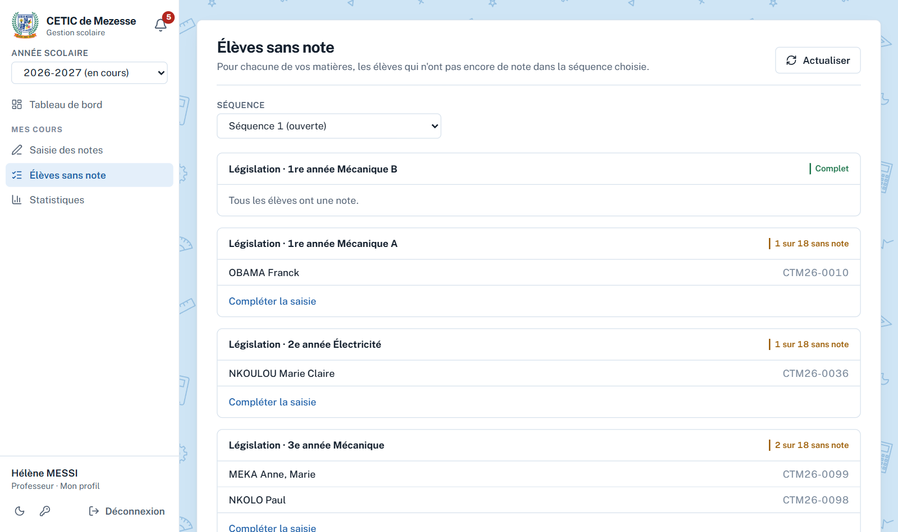
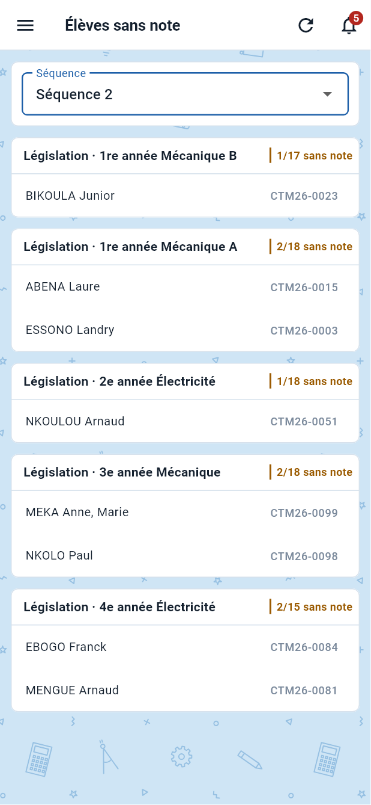
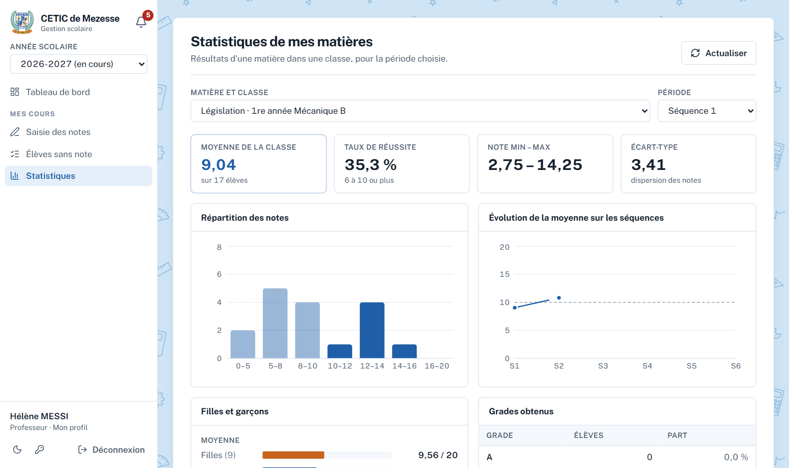
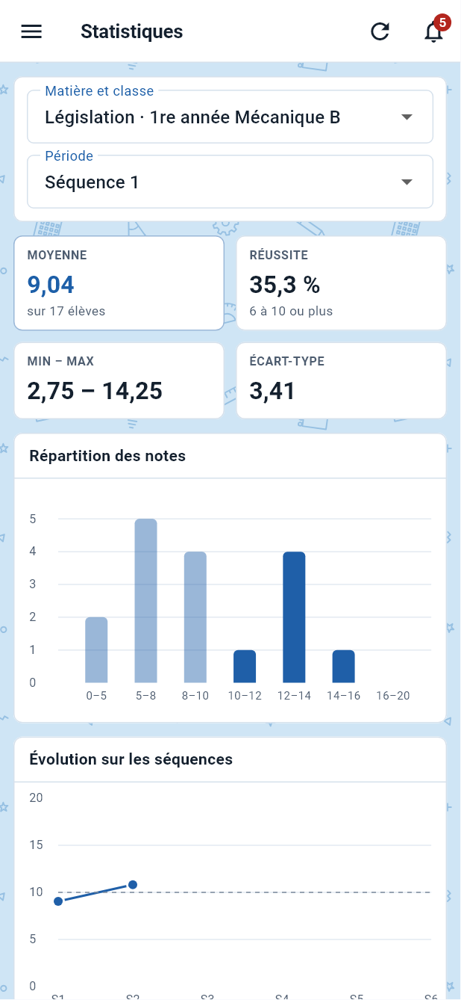

Votre travail ne change pas : vous saisissez les notes de vos matières. Trois nouveautés vous concernent.
Nouveauté
Où
Notifications sur le téléphone et le navigateur
Proposées à la connexion
Saisir toutes les notes : la règle des matières composées
Mes cours → Saisie des notes
Rang dans la matière : élève désigné parmi les ex æquo
Statistiques de mes matières
1. Les notifications sur le téléphone et le navigateur
Les notifications de la cloche (par exemple l'ouverture de la saisie des notes) arrivent aussi sur le téléphone et dans le navigateur, même application ou onglet fermé.
1
Les activer : à la connexion, l'application propose « Recevoir les notifications ? » (mobile : Autoriser) ou « Recevoir les notifications sur cet appareil ? » (site : Activer). Plus tard repousse la question.
2
Les toucher ouvre directement la page concernée.
3
Se déconnecter : l'appareil ne reçoit plus les notifications de votre compte, même si la session a expiré ou si le réseau manquait (la demande repart dès que le réseau revient). Sur un téléphone ou un ordinateur partagé, la personne suivante ne voit donc pas vos notifications.
2. Saisir toutes les notes
Une note manquante ne compte plus toujours 0. Tout dépend de la part des matières évaluées que l'élève a composées sur la séquence :
moins d'un tiers : l'élève n'est pas classé (« NC ») ;
entre un tiers et deux tiers : la matière manquante compte 0 ;
plus de deux tiers : elle est ignorée (son coefficient ne compte pas).
Une note oubliée peut donc changer la moyenne et le rang d'un élève : saisissez toutes les notes avant la fermeture de la séquence, et vérifiez la page Élèves sans note.


Figure 1 — Élèves sans note · site à gauche, application mobile à droite
3. Le rang dans la matière
Dans Statistiques de mes matières, la liste des notes donne le rang de chaque élève dans la matière. Des élèves ex æquo partagent leur rang ; l'un d'eux, désigné selon les critères réglés par la direction, le porte sans « ex », comme sur son bulletin.


Figure 2 — Statistiques de mes matières · site à gauche, application mobile à droite